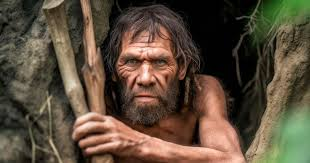
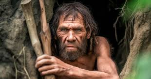

The process of evolution"homo sapiens"
The evolution of mankind
Human evolution is the lengthy process of change by which people originated from apelike ancestors. Scientific evidence shows that the physical and behavioral traits shared by all people originated from apelike ancestors and evolved over a period of approximately six million years. One of the earliest defining human traits, bipedalism -- the ability to walk on two legs -- evolved over 4 million years ago. Other important human characteristics -- such as a large and complex brain, the ability to make and use tools, and the capacity for language -- developed more recently. Many advanced traits -- including complex symbolic expression, art, and elaborate cultural diversity -- emerged mainly during the past 100,000 years. Humans are primates. Physical and genetic similarities show that the modern human species, Homo sapiens, has a very close relationship to another group of primate species, the apes. Humans and the great apes (large apes) of Africa -- chimpanzees (including bonobos, or so-called “pygmy chimpanzees”) and gorillas -- share a common ancestor that lived between 8 and 6 million years ago. Humans first evolved in Africa, and much of human evolution occurred on that continent. The fossils of early humans who lived between 6 and 2 million years ago come entirely from Africa.
 
